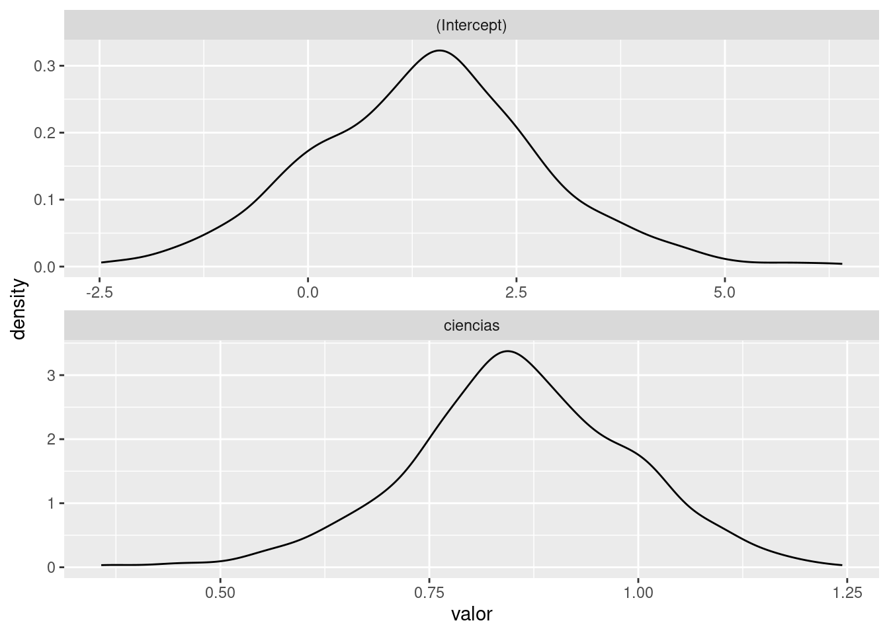

# Una forma de hacer asignación
objeto <- "valor"
# Otra forma
objeto = "valor"
# Otro forma
"valor" -> objeto
# Ejemplos
pais = "Colombia"
departamentos = 32
trm = 4000.5
tenemos_mar = TRUEProgramación básica en R
Ya aprendimos a importar datos.
Ahora vamos a ver distintos elementos que necesitamos para procesarlos.
Algoritmos
Un algoritmo es un conjunto finito de instrucciones que, si se siguen rigurosamente, llevan a cabo una tarea específica.
Todos los algoritmos se componen de “partes” básicas que se utilizan para crear “partes” más complejas.

El tratamiento, análisis y modelado de datos lo haremos mediante algoritmos.
Variables y datos
- Variables: característica observable o un aspecto discernible en un objeto de estudio, que puede adoptar diferentes valores o expresarse en varias categorías.
- Dato: realización, representación o valor observado de una variable.
Tipos de variables y operaciones
Enfoque teórico
Enfoque desde la programación

Asignación
Tipos de variables
- Booleanos (lógicos)
- VERDADERO
- FALSO
objeto_nombrado_por_mi <- TRUE # Siempre con mayúsculas
objeto_nombrado_por_mi
class(objeto_nombrado_por_mi)
is.logical(objeto_nombrado_por_mi)- Numéricos
- Enteros
- Reales
pi
objeto_nombrado_por_mi <- 0
objeto_nombrado_por_mi
class(objeto_nombrado_por_mi)
is.numeric(objeto_nombrado_por_mi)- Alfanuméricos: caracteres o cadenas de texto
objeto_nombrado_por_mi <- "hola mundo"
objeto_nombrado_por_mi
class(objeto_nombrado_por_mi)
is.character(objeto_nombrado_por_mi)- Fechas
objeto_nombrado_por_mi <- "1969-07-21" # Recomendado: ISO 8601 para fechas
objeto_nombrado_por_mi
class(objeto_nombrado_por_mi)
otro_objeto_distinto <- as.Date(objeto_nombrado_por_mi)
class(otro_objeto_distinto)- NA
objeto_nombrado_por_mi <- NA # Siempre en mayúsculas NA
objeto_nombrado_por_mi
class(objeto_nombrado_por_mi)Método is
cualquier_cosa <- TRUE
is.logical(cualquier_cosa)
is.numeric(cualquier_cosa)
is.character(cualquier_cosa)Método as
TRUE -> true_logico
true_logico
class(true_logico)
as.character(true_logico) -> true_char
true_char
class(true_char)
1 -> uno_numeric
uno_numeric
class(uno_numeric)
as.character(uno_numeric) -> uno_char
uno_char
class(uno_char)Conversiones
| Desde | Hacia |
|---|---|
| logical | numeric |
| logical | character |
| numeric | character |
| numeric | Date |
| character | Date |
Operadores matemáticos
2+2
5-2
3*4
5/4
9 %% 2
3 ** 3
3 ^ 3
log(10)
sqrt(16)Operadores para comparación
5 > 2
5 < 2
10 == 10
10 == 9
10 != 9
10 >= 10
10 <= 8Operadores lógicos
- Conjunción (se cumplen ambas): &&
- Disyunción (se cumple alguna): ||
- Negación (lo contrario): !
Orden de las operaciones
- PEMDAS
- Paréntesis
- Exponentes
- Multiplicaciones / Divisiones
- Adición / Sustracción
Variables
pi = 3.1415
radio = 3
area = pi * radio**2
area
round(area, 2)
# Aplicado en una función
library("readxl")
ruta = "01_data/programacion/DataObesidad.xlsx"
hoja = "Obesidad"
read_xlsx(
path = ruta,
sheet= hoja
) -> data_xlsxVectores, matrices, arreglos, listas y tablas
- Vectores: Arreglos lineales del mismo tipo. Tienen la misma clase.
- Matrices: Arreglos rectangulares del mismo tipo. Sábanas de la misma clase.
- Arreglos: Organizaciones cúbicas y de mayor dimensión.
- Listas: Arreglos lineales de distintos tipos.
- Tablas: La estructura data.frame permite tener tablas de datos, donde cada columna es de un tipo determinado, pero no todas iguales.
Un tipo especial de variables: factores
Son vectores numéricos enmascarados como caracteres. Se usan para crear grupos usando clasificaciones o codificaciones de las variables de interés. Estos factores pueden o no tener un orden.
Ejemplos: estrato socioeconómico, nivel de estudios, mes, sexo, localidad.
Vectores
1:5
letters
LETTERS
c(1, 3, 2, 15, 4, 0, 0, 0, 1)
seq(10, 100)
seq(10, 100, by = 5)
seq(10, 100, length.out = 8)Factores
as.factor(letters)
estrato = c(2,3,4,1,3,6,5,2,3,4,1,2,3,4,6)
estrato
estrato.factor = factor(estrato)
estrato.factor
estrato.factor.ordenado = factor(estrato, levels=c(1,2,3,4,5,6))
estrato.factor.ordenadoFunciones sobre vectores
vector_logico <- c(TRUE,FALSE,FALSE,TRUE,FALSE)
vector_cualquiera <- seq(1, 100, by = 3)
un_vector <- c(1, 2, 3, 4, 5)
otro_vector <- c(6, 7, 8, 9, 10)which(vector_logico) # me dice cuales son los verdaderos
length(vector_cualquiera) # me dice cuánto mide el vector
c(un_vector, otro_vector) # concatena los vectoresOperaciones entre vectores
vector_numerico <- c(2, 4, 6, 8, 10)
vector_numeric_1 <- 1:3
vector_numeric_2 <- 3:5vector_numerico > 3
1:5 %in% 3:8
outer(vector_numeric_1, vector_numeric_2, "*")
outer(vector_numeric_1, vector_numeric_2, ">")Operaciones entre vectores (conjuntos)
union(vector_numeric_1, vector_numeric_2)
intersect(vector_numeric_1, vector_numeric_2)
setdiff(vector_numeric_1, vector_numeric_2)Matrices
matrix(data = 1:12, nrow = 3)
matrix(data = 1:12, nrow = 6)
matrix(data = 1:12, ncol = 6)
matrix(data = 1:12, nrow = 4)
matrix(data = 1:12, nrow = 4, byrow = TRUE)
matrix(data = seq(0, 9, length.out = 4), nrow = 2) -> mi_matriz
mi_matrizOperaciones sobre matrices
otra_matriz # Toca inventársela
mi_matriz*2 # Producto por un escalar
mi_matriz + otra_matriz # Suma de matrices
mi_matriz*otra_matriz # Producto celda por celda
mi_matriz %*% otra_matriz # Producto de matricesFunciones sobre matrices
t(mi_matriz) #mi_matriz transpuesta
diag(mi_matriz) #Diagonal de mi_matriz
det(mi_matriz) # Determinante, debe dar un número
solve(mi_matriz) # Matriz inversa, sólo se puede con matrices cuadradas de determinante distinto de cero
dim(mi_matriz) # Dimensión de mi matrizBibliografía complementaria: Parte 1 Capítulo 2: Linear Algebra, del libro Deep Learning del MIT
Tablas
library("tidyverse")
iris
?iris
diamonds
?diamonds
mpg
?mpg
class(diamonds)
class(mpg)
str(diamonds)
str(mpg)
View(diamonds)
View(mpg)Extracción [.
cuales_extraer <- c(1, 8, 6, 3) # Creo un vactor con las posiciones que deseo extraer
letters[cuales_extraer] # Extrae las letras 1, 8, 6, 3 del vector letters
vector_numerico[vector_numerico > 3] # Extrae los valores mayores a 3 en vector_numerico
un_vector[1] # Extrae el elemento #1 del vector un_vector
mi_matriz[1,2] # Extrae el valor en la fila 1 columna 2 de mi_matriz
mi_matriz[,1] # Extrae la primera columna de mi_matriz
mi_matriz[2,] # Extrae la segunda fila mi_matriz
diamonds[,8] # Extrae la fila 8 de diamonds
diamonds["x"] # Extrae de diamonds la columna llamada "x"
cuales_extraer = c("x","y","z") # Creo un vector de variables a extraer
diamonds[cuales_extraer] #Hago la extracciónEjemplo: Prueba T
A partir de la base de datos evaluacion, hagamos una prueba de hipótesis para testear si el puntaje obtenido en ciencias (variable ciencias) está influenciado/afectado por el sexo (variable sexo).
Nota: cuando una variable toma dos valores se puede recodificar como una variable dummy.
# Cargo los datos de evaluacion y lo guardo en un objeto llamado evaluacion_xlsx
read_xlsx(
path = "01_data/programacion/evaluacion.xlsx",
sheet= "datos"
) -> evaluacion_xlsx
# Hago la prueba t
t.test(ciencias ~ sexo, data = evaluacion_xlsx) -> t_test_ciencias_sexo
# Llamo los resultados de la prueba t
t_test_ciencias_sexo¿Qué podríamos extraer de este objeto?
str(t_test_ciencias_sexo)Extraigamos el p-valor de la prueba.
t_test_ciencias_sexo["p.value"]
t_test_ciencias_sexo[["p.value"]]
# Otra forma
t_test_ciencias_sexo$p.valuePodemos extraer partes de todos los objetos que tengamos en nuestro ambiente de trabajo.
Ejemplo: Modelo de regresión lineal
Ajustemos un modelo de regresión lineal simple usando como variable respuesta el puntaje obtenido en humanidades (variable humanidades) en función del puntaje obtenido en ciencias (variable ciencias).
lm(humanidades ~ ciencias, data = evaluacion_xlsx) -> modelo_humanidades_ciencias
modelo_humanidades_cienciassummary(modelo_humanidades_ciencias)¿Qué podríamos extraer de este objeto?
str(summary(modelo_humanidades_ciencias))Extraigamos el \(R^2\) ajustado del modelo.
summary(modelo_humanidades_ciencias)$adj.r.squaredControl flow
El control flow es un conjunto de funciones que permiten manejar las órdenes de manera estructurada y lógica. Las más importantes son:
- if
- if - else
- for
- while
- repeat
- break
- next
?ControlLoops
Todos los lenguajes modernos de programación ofrecen una o más maneras de realizar operaciones iterativas. El poder repetir la misma acción una cantidad indefinida de veces es una de las grandes ventajas de realizar las tareas mediante programación.

for
Sirve para crear tareas repetitivas de un número de pasos específico.
Uno de los usos más frecuentes de un ciclo for es la configuración de métodos de remuestreo (bootstraping).

#vamos a guardar en una lista los coeficientes de una regresión
coeficientes <- list()
# inicializo el ciclo for
for(i in 1:1000){
#en cada paso
# 1. saco una muestra de 30 estudiantes
muestra <- sample_n(evaluacion_xlsx, 30)
# 2. ajusto un modelo de regresión lineal
lm(humanidades ~ ciencias, data = muestra) -> modelo
# 3. extraigo y almaceno los coeficientes del modelo
coeficientes[[i]] <- coefficients(modelo)
}
# grafico el comportamiento de los coeficientes
coeficientes %>%
transpose %>%
lapply(unlist) %>%
as_tibble() %>%
gather(key = coeficiente, value = valor) %>%
ggplot +
aes(x = valor) +
geom_density() +
facet_wrap(~coeficiente, nrow = 2, scales = "free")
while
Sirve para crear tareas repetitivas que no sabemos después de cuántos pasos terminan. Requiere una inicialización cuidadosa.
Ejemplo: ¿Cuántos sobres tengo que comprar para llenar un álbum de 100 cromos?
# inicializo las condiciones de partida
album <- iteracion <- 0
# creo la condición lógica que permite ejecutar el proceso
aun_falta <- TRUE
# siempre que aun_falta siga siendo verdadero
while(aun_falta){
# en cada ciclo
# 1. actualizo en qué iteración voy
iteracion <- iteracion + 1
# 2. extraigo una muestra de 6 números ("compro un sobre con 6 cromos")
sobre <- sample(100, 6)
# 3.1 tomo el álbum
# 3.2 le combino los cromos que obtuve
# 3.3 ordeno los cromos de menor a mayor
# 3.4 dejo valores únicos (quito cromos duplicados)
# 3.5 actualizo el álbum
album %>% c(sobre) %>% sort %>% unique -> album
# 4. si tengo menos de 100 cromos es porque me falta
length(album) < 100 -> aun_falta
}
# muestro el número de iteraciones
# es decir, cuántos sobres tuve que comprar
iteracionif, else
La estructura if sirve para ejecutar varias rutinas distintas dependiendo de una condición lógica. En caso de que sea necesario, es posible aplicar una rutina alterna con la estructura else.
Ejemplo: Prueba de normalidad.
Diversas pruebas y modelos estadísticos requieren verificar el supuesto de normalidad en los datos.
# cargo la base de datos del PGN y la almaceno en un objeto llamado pgn
read_xlsx(
path = "01_data/programacion/Base de datos PGN 2024.xlsx",
sheet= "Data"
) -> pgn
# extraigo la variable Funcionamiento
# le hago un test de shapiro
# guardo los resultados de la prueba en un objeto llamado prueba_sw
pgn[["Funcionamiento"]] %>% shapiro.test() -> prueba_sw
# estructura condicional
if(prueba_sw$p.value > 0.05){
# Si acepto la hipótesis de normalidad en la variable mpg
# Hago una prueba t
print("La variable Funcionamiento sigue una distribución normal")
print("Realizo una prueba t")
t.test(mpg ~ vs, data = mtcars)
} else {
# Si rechazo la hipótesis de normalidad en la variable mpg
# Hago una prueba Mann-Whitney-Wilcoxon
print("La variable Funcionamiento no sigue una distribución normal")
print("Realizo una prueba Mann-Whitney-Wilcoxon")
wilcox.test(mpg ~ vs, data = mtcars)
}